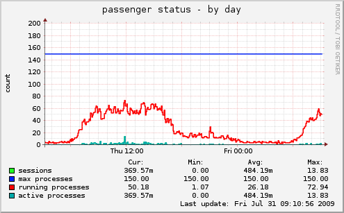
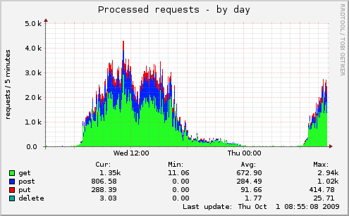
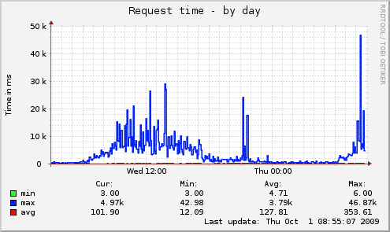
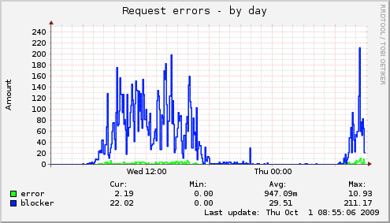
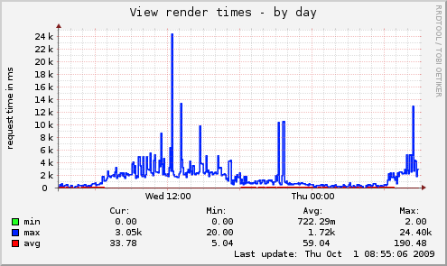
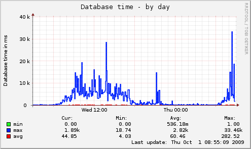

Everything you need to know, wrapped up in a little nutshell
Munin Plugins Rails
Powered by Request log analyzer and railsdoctors
Munin Plugins Rails is a collection of Consise Munin plugins for Rails server environments. This will make monitoring your rails app a piece of cake. Most things in this repository rely heavily on the request log analyzer gem. Below are some examples of the output generated.
Passenger Status
Requests
Request Duration
Request Errors
Rails View Render Time
Database Time
Seen enough? Then Head over to github!